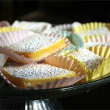

Bake Sale Lemon Bars

Description
Cupcakes, brownies, and cookies are always winners, but any small, portable baked items are good bake sale ideas. Note that bake sale cookies, cupcakes, brownies, and muffins are easier to package and sell by the piece than are cakes and pies
Ingredients
- 1½ cups all-purpose flour
- ⅔ cup confectioners' sugar
- ¾ cup butter or margarine, softened
- 3 eggs
- 1½ cups white sugar
- 3 tablespoons all-purpose flour
- ¼ cup lemon juice
- ⅓ cup confectioners' sugar for decoration
Steps
- Preheat the oven to 375 degrees F (190 degrees C). Grease a 9x13 inch baking pan.
- Combine the flour, 2/3 cup confectioners sugar, and butter. Pat dough into prepared pan.
- Bake for 20 minutes in the preheated oven, until slightly golden. While the crust is baking, whisk together eggs, white sugar, flour, and lemon juice until frothy. Pour this lemon mixture over the hot crust.
- Return to the preheated oven for an additional 20 to 25 minutes, or until light golden brown. Cool on a wire rack. Dust the top with confectioners' sugar. Cut into squares.
Home